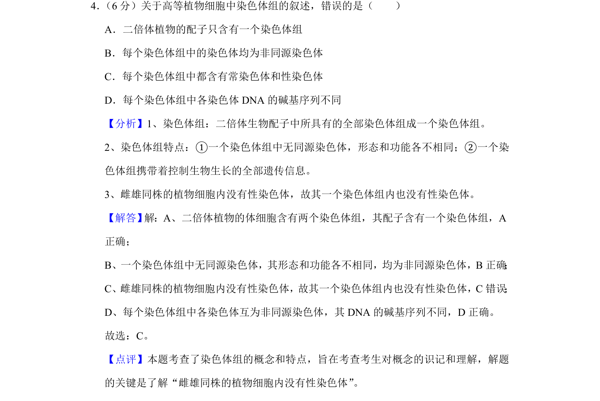
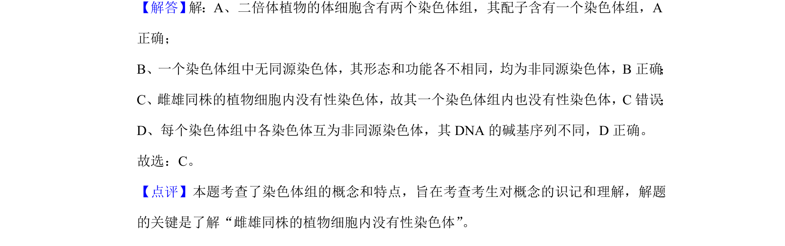

考点：染色体组 非同源染色体 性染色体 二倍体植物配子

考查染色体组概念、特点及其在高等植物细胞中的应用，重点涉及雌雄同株植物无性染色体。

📄 原 PDF 第 3 页：
素材/真题/吉林/2008-2024·（吉林）生物高考真题/2020年高考生物试卷（新课标Ⅱ）（解析卷）.pdf
4． （6分）关于高等植物细胞中染色体组的叙述，错误的是（ ） A．二倍体植物的配子只含有一个染色体组 B．每个染色体组中的染色体均为非同源染色体 C．每个染色体组中都含有常染色体和性染色体 D．每个染色体组中各染色体DNA的碱基序列不同
【分析】1、染色体组：二倍体生物配子中所具有的全部染色体组成一个染色体组。 2、染色体组特点：①一个染色体组中无同源染色体，形态和功能各不相同；②一个染 色体组携带着控制生物生长的全部遗传信息。 3、雌雄同株的植物细胞内没有性染色体，故其一个染色体组内也没有性染色体。 【解答】 解：A、二倍体植物的体细胞含有两个染色体组，其配子含有一个染色体组，A 正确； B、一个染色体组中无同源染色体，其形态和功能各不相同，均为非同源染色体，B正确 ； C、雌雄同株的植物细胞内没有性染色体，故其一个染色体组内也没有性染色体，C错误 ； D、每个染色体组中各染色体互为非同源染色体，其DNA的碱基序列不同，D正确。 故选：C。 【点评】本题考查了染色体组的概念和特点，旨在考查考生对概念的识记和理解，解题 的关键是了解“雌雄同株的植物细胞内没有性染色体”。